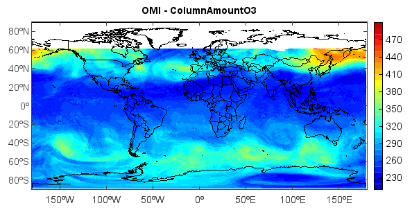

imshowm¶
-
mipylib.plotlib.miplot.imshowm(*args, **kwargs)¶ Display an image on the map.
- Parameters
x – (array_like) Optional. X coordinate array.
y – (array_like) Optional. Y coordinate array.
z – (array_like) 2-D z value array.
levs – (array_like) Optional. A list of floating point numbers indicating the level curves to draw, in increasing order.
cmap – (string) Color map string.
colors – (list) If None (default), the colormap specified by cmap will be used. If a string, like ‘r’ or ‘red’, all levels will be plotted in this color. If a tuple of matplotlib color args (string, float, rgb, etc), different levels will be plotted in different colors in the order specified.
fill_value – (float) Fill_value. Default is
-9999.0.proj – (ProjectionInfo) Map projection of the data. Default is None.
order – (int) Z-order of created layer for display.
- Returns
(RasterLayer) RasterLayer created from array data.
Example:
#Add data file folder = 'D:/Temp/hdf/' fns = 'OMI-Aura_L3-OMTO3e_2005m1214_v002-2006m0929t143855.he5' fn = folder + fns f = addfile(fn) vname = 'ColumnAmountO3' v = f[vname] data = v[:,:] #Plot axesm() mlayer = shaperead('D:/Temp/map/country1.shp') geoshow(mlayer, edgecolor='k') layer = imshowm(data, 20) colorbar(layer) title('OMI - ' + vname) axism()